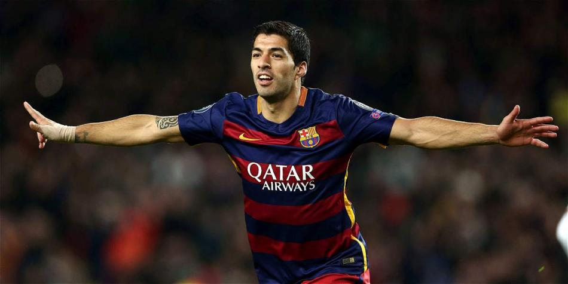

Didac
Diseñador visual
Convierte las ideas del equipo en una identidad visual clara y coherente. Se encarga de definir el estilo gráfico, crear las piezas visuales y cuidar cada detalle del proyecto.
Conoce quiénes somos, cómo trabajamos y los principios visuales que dan coherencia a cada proyecto de RedLine.
También puedes visitarnos
Descubre el proyecto completo, nuestro trabajo y todo lo que hacemos como equipo.
Diseñador visual
Convierte las ideas del equipo en una identidad visual clara y coherente. Se encarga de definir el estilo gráfico, crear las piezas visuales y cuidar cada detalle del proyecto.

Coordinador de proyecto
Organiza el trabajo del grupo y transforma los objetivos en un plan de acción ordenado. Coordina las tareas, supervisa los plazos y facilita que todos avancemos en la misma dirección.
Editor de contenidos
Da voz al proyecto y convierte la información en mensajes claros y atractivos. Redacta, revisa y adapta los contenidos para comunicar con claridad y mantener el tono de RedLine.
Me comprometo a diseñar la identidad visual, cuidar la coherencia gráfica y preparar las piezas visuales dentro de los plazos establecidos.
Me comprometo a coordinar el trabajo del equipo, organizar las tareas y supervisar que se cumplan los plazos y objetivos.
Me comprometo a redactar, revisar y publicar los contenidos, manteniendo la claridad y la calidad de la información.
Esta página sigue la guía de estilos propia del equipo. A continuación se muestran los elementos base y el enlace al documento original.
Noto Music / Noto Sans — títulos (700) y cuerpo (400).
Ejemplo de texto en cuerpo de párrafo.
Navegación clara con botones redondeados, hero con esquinas suaves, tarjetas blancas con sombras ligeras y acentos rojos.
📄 Descargar / consultar el documento completo de la guía de estilos (PDF)